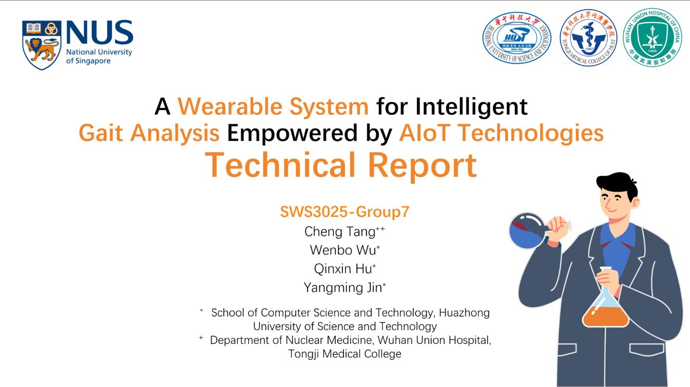
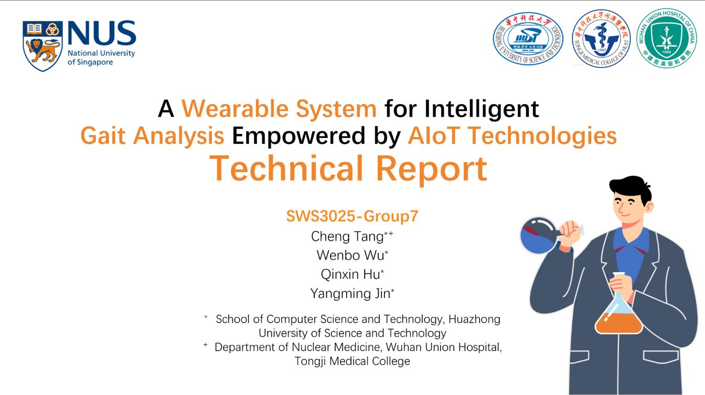
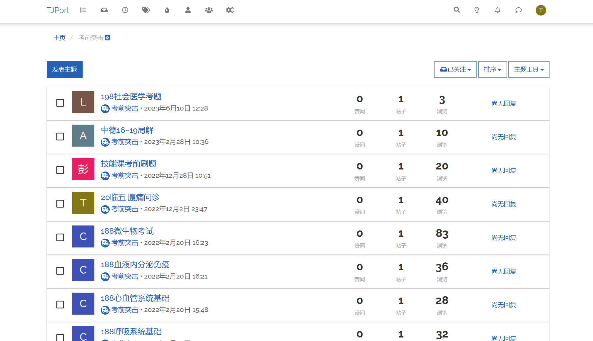
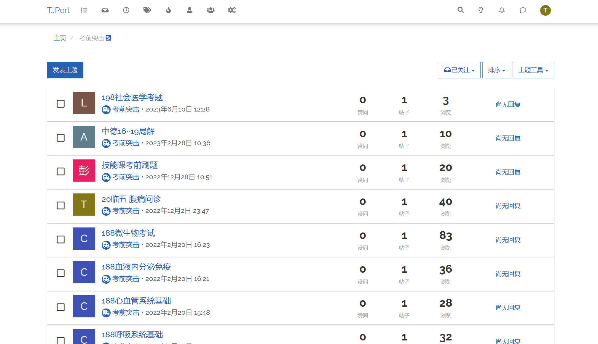

唐诚
Cheng Tang
MBBS & BS, M.D. Candidate
Wuhan Union Hospital, HUST
chengtang@hust.edu.cn
+86 15927203698
Skills
- English: CET4, CET6
- Biomedicine: Bioinformation, Biochemistry, Genetics, Immunology, Microbiology...
- Others: Piano, Table Tennis, Taekwondo blue ribbon...
Languages
- Python (PyTorch)
- HTML / CSS / JavaScript
- A little C / C++, Golang, Rust, SQL...
Education
Huazhong University of Science and Technology- Computer Science (B.S.)
- Clinical Medicine (M.D.)
- PDF CV
Projects
Anterior commissure and posterior commissure localizer in 3DSlicer
Jan 2024 - Feb 2024
A 3DSlicer plugin for easy rigid transformation of the AC-PC line to the origin of the image. The plugin is intended to help researchers in the field of neuroimaging to standardize the AC-PC line localization process.
A Wearable System for Intelligent Gait Analysis Empowered by AIoT Technologies / National University of Singapore (NUS)
July 2023 - August 2023
Group project for the 2023 National University of Singapore (NUS) School of Computing Summer Workshop Program. The project is intended to help patients with gait disorders to recover by providing real-time feedback and personalized rehabilitation plans.
- Serve as the system architect and the chief lecturer in the final presentation.
- Accomplished most tasks related to Raspberry Pi, including duplex communication between Micro:bit chips and Raspberry Pi via the Bluetooth protocol.
- A real-time sensor data rendering fronend and GUI for scanning & connecting BLE devices
- Solved the conflicts caused by WiFi (2.4GHz) and BLE devices.
 


NaiveBehavLab：A Multi-Animal Behavior Analysis Tool Based on Pose Estimation
Aug 2021 - Current
Graduation project for my minor. The software is intended to help researchers without any software developing knowledge from department of neurobiology and neurosurgery department (Tongji Hospital) reduce tedious labor work.
- Combined lightweight Openpose with idTracker.ai for animal pose estimation and reliable multi-animal tracking
- Built a web-based multi-mice behavior analysis tool similar to DeepLabCut. The frontend is based on React.js, antDesign, D3.js, Echarts, etc. The backend is based on Flask, PyTorch, sqlite, etc.
- Here is the project page!

Here is a video demo showing how to use it!
TJPORT: BBS for Tongji Medical Students
Nov 2021 - Current
TJPort is a BBS based on NodeBB. It provides a platform for Q&A, learning resources sharing, and online chatting.

 

Mouse Brain Reconstruction With Neurons Stained With Antibody to c-fos
Aug 2021 - Feb 2022
- Reconstructed the 2D slices of mouse brain with neurons stained with antibody to c-fos protein for better illustration.
- The interactive reconstructed 3D model (rendered by Babylon.js) clearly demonstrated the activated brain region when mice were socializing.
- Built a viewer with tauri, a framework similar to electron but written in Rust and relies on webview.
Obsidian CSS
Dec 2021
- I contributed and got merged by a Github project that has 1.3k+ stars⭐!
- The resizable-mermaid plugin gets a lot of positive feedback from the obsidian community!

CNN-Based Monocular Depth Estimation Neural Network / Massachusetts Institute of Technology (MIT)
Jun 2020 - Aug 2020
Built a network for depth estimation during the course of Maching Learning+, a brief introduction online course given by professors at MIT. Scored 92 / 100+ (with bonus points) of the course.


An Interpretable Prognostic Approach for COVID-19 Patients Based on Continuous-Time Hidden Markov Model / Center of Bioimaging and Bioinformation, HUST
Feb 2019 - Oct 2020
- Utilized Continuous-Time Hidden Markov Model (CT-HMM) to model the progression of COVID-19 infected patients. We collected data from 1559 patients and trained the model to deduce the hidden health status (dying/cured) from biochemical tests and biomarkers.
- Interpreted the calculated parameters given by the CT-HMM. We calculated the average and median time of recovery and death and showed the that the patients were more likely to recover than deteriorate, which suggests the treatment provided at Wuhan Union Hospital is likely to be effective.
- Evaluated 12 biomarkers that had been suggested of prognostic value. We calculated the probability distribution of death and recovery given different biochemical test results from the patients.

Summer Intership / Bingyan Studio
Jun 2018 - Aug 2018
Summer internship as a backend developer at Bingyan Studio, one of the 3 major student associations in HUST. Built an online shopping platform based on Gin, a framework written in Golang.
Awards
Scholarship
Outstanding Students in Term of Academic Performance (Top 1%)
Academic Excellence Award
Innovation of Science and Technology Award
The Most Improved Scholarship
The Self-improvement Scholarship
Competition
National English Competition for College Students
2nd Prize
The Mathematical Contest in Modeling
Honorable Mention (Captain & Student Advisor)
The National Competition for undergraduate on Innovation Research & Experimental Design in Basic Medical Sciences
Captain & Lecturer
- Grand Prize (University, 2022)
- Third Prize (Regional, 2022)
- First Prize (University, 2023)
- Best Presentation (University, 2022)
- Best Academic (University, 2022)
National University of Singapore Summer Workshop (School of Computing)
2nd Prize
Outstanding Paper Competition of the Nuclear Medicine Branch of the Hubei Medical Association
2nd Prize
The 15th Clinical Medical Knowledge and Skills Competition for Medical Students
2nd Prize
ISICDM'25 multi-site hippocampus segmentation challenge
1st Prize (Ranked #1)


Internship
Oct 2018 - Aug 2020
English Broadcaster (English Broadcasting Group), Broadcasting Station, Huazhong University of Science and Technology
Sep 2022 - Nov 2023
Student Union Member (Department of Publicity), Wuhan Union Hospital
Feb 2023 - Nov 2023
Student Assistant, Psychological Counselling Center, Tongji Medical College
Publication
Shen XY, Zhang J, Huang HZ, Li SD, Zhou L, Wu SP, Tang C, Huang X, Liu ZQ, Guo ZY, Li X, Man HY, Lu YM, Zhu LQ, Liu D. The interaction of Synapsin 2a and Synaptogyrin-3 regulates fear extinction in mice. J Clin Invest. 2024 Jan 4;134(4):e172802. doi: 10.1172/JCI172802IF: 15.9 B1. PMID: 38175724; PMCID: PMC10866652.
Tang C, Zhou Y, Zhao S, et al. Segmentation tracking and clustering system enables accurate multi-animal tracking of social behaviors. Patterns. September 2024:101057. doi:10.1016/j.patter.2024.101057
From coarse to refined: Fully automated amyloid brain PET spatial normalization pipeline using Convolutional Neural Networks without MRI (Top Rated Oral Presentation within the Scientific Programme of EANM'24)
无需MRI的基于级联神经网络的自动Centiloid计算方法（2024中华核医学年会，郑州）
唐诚,阮伟伟,兰晓莉,孙逊.基于PET的影像组学在阿尔茨海默病评估中的应用进展[J].中国医学影像学杂志,2024,32(05):504-509.


Motivation
However, I am eager to combine my medical career and my passion on computer science to create something new, and have made practical and steady efforts. Unfortunately, I am only able to explore the fields alone due to the restrictions of my surrounding environment, a typical medical college with few experts in ML/AI. From then on, I have been anticipating to do scientific research and get fully trained at such a high-level institution, and explore cutting-edge methods and tools. If I were able to have such an opportunity, I believe that such experiences would bring profound benefits to my future medical research career.